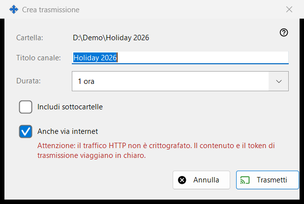
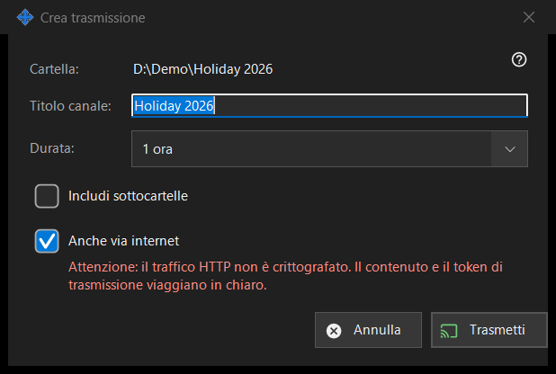

Crea trasmissione
Scopo
Imposta una trasmissione prima di crearla: il titolo, quanto dura e se raggiunge oltre la rete locale. Si apre da «Crea trasmissione..» nella finestra delle trasmissioni per il file o la cartella scelti. Non viene creato né inviato nulla finché non premi «Trasmetti».


In questo ordine
- Controlla il percorso nella prima riga (Cartella: o File:).
- Modifica «Titolo canale:»; inizialmente è il nome della cartella o del file.
- Scegli «Durata:».
- Per una cartella, seleziona «Includi sottocartelle» se ti servono.
- Lascia o togli la selezione di «Anche via internet».
- Premi «Trasmetti» (Invio) oppure «Annulla» (Esc).
Gli elementi
Titolo e durata
Il titolo del canale è ciò che mostra l'elenco delle trasmissioni. La durata offre 24 ore (predefinita), 1 ora, 7 giorni e «Fino a revoca», che non ha data di fine e resta finché non la revochi nella finestra delle trasmissioni.
Includi sottocartelle
Compare solo quando la destinazione è una cartella ed è disattivata per impostazione predefinita. Decide se i file nelle sottocartelle della cartella trasmessa sono inclusi.
Anche via internet
Selezionata, a meno che le impostazioni di condivisione non limitino le esportazioni alla sola rete locale. Quando è selezionata, il link contiene, accanto a quello locale, anche gli indirizzi internet IPv6 e con porta inoltrata di questo PC, se sono noti. Selezionarla porta la durata da 24 ore a 1 ora (puoi rimetterla) e mostra un avviso rosso: il traffico HTTP non è cifrato, quindi il contenuto e il token della trasmissione viaggiano in chiaro. Chiunque abbia il link può leggere i file della trasmissione finché non scade o non viene revocata. Togli la selezione per mantenere la trasmissione nella rete locale.
Trasmetti e Annulla
«Trasmetti» si limita a restituire le tue scelte alla finestra delle trasmissioni, che poi crea la trasmissione e ne copia il link. «Annulla» chiude la finestra e non crea nulla.
Impostazioni del gestore · Impostazioni condivisione SFTP · Impostazioni server di scambio